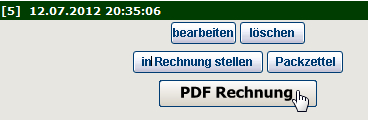
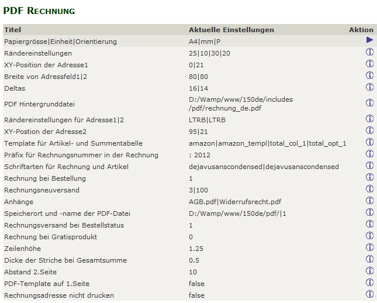
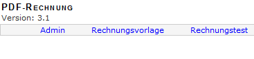
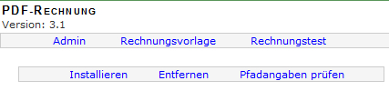
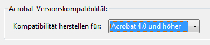

pdf Rechnung 3.1 für Zen-Cart 1.5 deutsch
Sinn und Zweck dieses Moduls
Im Adminbereich kann in der Bestellübersicht auf Knopfdruck eine Rechnung im pdf-Format erzeugt werden.
Diese Rechnung kann optional auch gleich bei der Bestellung oder bei Bestellstausänderungen mitgemailt werden und steht dem Kunden auch später in seiner Bestellhistorie zum Download zur Verfügung.
Einige Features:
- flexible Anpassung des Layouts durch Verwendung eigener pdf-Vorlagen möglich
- komplett multilanguage, unterschiedliche Rechnungen für unterschiedliche Sprachen möglich
- Breite Palette an mitgelieferten Schriftarten - beliebig erweiterbar
- Bei der Bestellung kann die pdf Rechnung automatisch an das Bestellbestätigungsmail angehängt werden.
- Bei Bestellstatusänderungen kann die Rechnung automatisch mitgemailt werden.
- Möglichkeit, Dokumente zu AGB und Widerrufsrecht automatisiert mitzusenden
- pdf-Rechnung für den Kunden in der Bestellhistorie unter "Mein Konto" zum Download verfügbar
- Automatisierte Installation - kein manueller SQL Import nötig
- und vieles mehr
Changelog 3.1: (webchills - Juli 2012)
- Anpassung für Zen-Cart 1.5 deutsch
- Bugfixes
- Rechnungsdatum wird in die Rechnung übernommen
- Entfernung nicht genutzter Funktionen und Dateien
- Überarbeitung der Anleitung
Copyright, Lizenz
Copyright (c) 2005-2012 edv-lösungen langheiter (edv.langheiter.com)
Portions Copyright (c) 2003 osCommerce, 2003-2012 Zen Cart
This contribution is subject to version 2.0 of the GPL license available through the world-wide-web at the following url:
http://www.zen-cart-pro.at/license/2_0.txt
Wenn du dieses Addon nutzt, musst du eine Postkarte (Tier, Pflanze oder sonstiges für Kinder Interessantes) schicken an:
David + Jacob Langheiter
Redtenbachergasse 6/29
A-1160 Wien
Austria
Installation
Voraussetzungen
Dieses Modul ist nur für die deutsche Zen-Cart 1.5 Version geeignet
Für den Einbau dieses Moduls sollten Sie über folgende Werkzeuge verfügen:
1) Ein guter Texteditor
Damit ist nicht das in Windows enthaltene Notepad oder Microsoft Word gemeint.
Sie benötigen einen Texteditor, der utf-8 versteht und auch im Format utf-8 ohne BOM abspeichern kann.
Meine Empfehlung: UltraEdit (kostenlose 30 Tage Testversion verfügbar)
Ebenfalls gut geeignet ist der kostenlose Texteditor Notepad++
2) Ein Tool zum Vergleichen von Dateien
Bei der Installation dieses Moduls ist es erforderlich, dass Sie den Inhalt einiger Ihrer bestehenden Zen-Cart Dateien mit dem Inhalt der neuen Moduldateien vergleichen und die Änderungen zusammenführen ("mergen").
Meine Empfehlung: BeyondCompare (kostenlose 30 Tage Testversion verfügbar)
Ebenfalls gut geeignet ist das kostenlose Programm WinMerge
Empfehlung:
Dieses Modul erst in einem Testsystem einbauen und dort konfigurieren/testen und endgültig an die eigenen Wünsche anpassen. Erst dann in einem Liveshop einsetzen! Sichern Sie unbedingt alle Dateien Ihres Shops per FTP und sichern Sie die Datenbank mit phpMyAdmin oder anderen geeigneten Tools!
Vor dem Einbau dieser Änderungen:
BACKUP von Shop und Datenbank machen!
Keine Haftung, Verwendung auf eigene Gefahr!
BACKUP gemacht? Ok, dann weiterlesen...
Die Installation erfolgt in folgenden Schritten. Halten Sie diesen Ablauf ein!
1.
Neue Dateien des Moduls einspielen:
Im Ordner NEUE DATEIEN dieses Downloads den Ordner DEINADMIN auf den Namen Ihres Admin-Verzeichnisses umbenennen.
Dann in der vorgegebenen Struktur ins Zen-Cart Verzeichnis hochladen.
Dadurch werden keine bestehenden Dateien überschrieben.
2.
Im Ordner pdf im Hauptverzeichnis werden später die pdf Rechnungen gespeichert, daher benötigt dieser Ordner Schreibrechte. Dem Ordner pdf daher Schreibrechte geben (chmod 777)
3.
Geänderte Dateien des Moduls einspielen:
Im Ordner GEAENDERTE DATEIEN dieses Downloads den Ordner DEINADMIN auf den Namen Ihres Admin Verzeichnisses umbenennen.
Den Ordner namens DEINTEMPLATE auf den Namen des im Shop aktiven Templates umbenenennen (z.B. classic, viennabright, ...)
Es wird dringend empfohlen, die bestehenden Orginaldateien nicht einfach zu überschreiben!
Machen Sie das nur, wenn Sie Zen-Cart 1.5 gerade neu installiert haben und noch keine Änderungen an Originaldateien vorgenommen haben.
Stattdessen vergleichen Sie Ihre entsprechenden Originaldateien mit einem geeigneten Programm wie z.B. WinMerge oder Beyond Compare und nehmen die Änderungen manuell vor.
Dann in der vorgegebenen Struktur ins Shopverzeichnis hochladen.
4)
Wenn alle Dateien hochgeladen sind, in die Zen-Cart Administration einsteigen und Kunden > Bestellungen aufrufen.
Dort ist jetzt rechts bei jeder Bestellung ein neuer Button "PDF-Rechnung":

5)
Bei irgendeiner Bestellung auf diesen Button clicken, dadurch werden die nötigen Einträge in der Datenbank vorgenommen und es geht der neue Menüpunkt Konfiguration > pdf Rechnung auf. Befüllt ist die Konfiguration bereits mit funktionierenden Standardwerten. Diese Werte kann man dann später auf seine Bedürfnisse anpassen, mehr dazu unter "Konfiguration".
6)
Die Installation ist damit abgeschlossen.
Jetzt am besten mal das Erzeugen einer pdf Rechnung ausprobieren und nochmal unter Kunden > Bestellungen eine Bestellung auswählen und den Button "PDF-Rechnung" anclicken.
Wenn dann ein pdf aufgeht mit dem Namen xxx.pdf (xxx=Bestellnummer) ist alles ok und das Modul ist einsatzbereit.
7)
Jetzt können Sie das Modul an Ihre Bedürfnisse anpassen und bei "Konfiguration" weiterlesen.
KONFIGURATION
Jetzt wo das Modul einsatzbereit ist, können Sie daran gehen, Ihre eigenen Vorlagen und Texte zu verwenden.
1)
Eigene Rechnungsvorlage erstellen
Erstellen Sie ein pdf so wie Sie es haben wollen. Als Orientierung schauen Sie die Datei an, die mitgeliefert wurde:
includes/pdf/rechnung_de.pdf
Speichern Sie dieses pdf als rechnung_de.pdf ab und lade es in includes/pdf hoch und ersetzen das bestehende Beispiel-pdf damit.
Hinweis:
Falls Sie Ihrer Vorlage einen eigenen Namen geben (z.B. meinefirma_rechnungsvorlage.pdf), muss der Dateiname in der Administration und in der includes/pdf/rl_invoice3_def.php entsprechend geändert werden:
Im Admin unter Konfiguration > pdfRechnung den Dateinamen ändern bei:
pdf Hintergrunddatei
Also z.B. auf:
/var/www/html/xxxx/html/shop/includes/pdf/meinefirma_rechnungsvorlage.pdf
Dann in der includes/pdf/rl_invoice3_def.php alle rechnung_de.pdf auf meinefirma_rechnungsvorlage.pdf umbenennen.
Erstellen Sie danach probeweise eine pdf Rechnung, um zu sehen, wie die Rechnung nun mit Ihrem neuen Hintergrund aussieht.
Wichtig:
Wenn Sie Ihr pdf mit Adobe Acrobat erstellen, dann stellen Sie unbedingt
eine Kompatibilität für Acrobat Version 4 und höher ein. Sie bekommen sonst beim Erstellen der pdf Rechnung die Meldung FPDF error: Unable to find xref table - Maybe a Problem with 'auto_detect_line_endings'
2)
Eigene pdfs für AGB und Widerrufsrecht erstellen
Falls Sie das Mitsenden von AGB und Widerrufsrecht nutzen wollen, erstellen Sie auch dafür 2 eigene pdf Dateien:
Um zusätzlich die AGB mitzusenden, ein pdf mit den AGB erstellen und z.B. als AGB.pdf abspeichern.
Die AGB.pdf in folgendes Verzeichnis in Zen-Cart hochladen:
includes/pdf
Dadurch wird das mitgelieferte AGB-Beispiel überschrieben
Dann unter Konfiguration > pdf Rechnung 3 > Anhänge folgendes eintragen:
AGB.pdf
Um zusätzlich auch noch eine Info zum Widerrufsrecht mitzusenden, ein pdf mit der Widerrufsinfo erstellen und z.B. als Widerrufsrecht.pdf abspeichern.
Widerrufsrecht.pdf in folgendes Verzeichnis in Zen-Cart hochladen:
includes/pdf
Dadurch wird das mitgelieferte Widerrufsbeispiel überschrieben
Dann unter Konfiguration > pdf Rechnung 3 > Anhänge folgendes eintragen:
AGB.pdf | Widerrusrecht.pdf
3)
Mit den mitgelieferten Schriftarten experimentieren
Voreingestellt in der Konfiguration ist die Schriftart Dejavu Sans Condensed für die Rechnungstexte und für die Artikeltexte und die Summen.
Alle verfügbaren Schriften findest Sie im Ordner includes/pdf/font
Um nun andere der mitgelieferten Schriftarten zu verwenden, stellen Sie unter Schriftarten für Rechnung und Artikel zwei andere ein, z.B.
dejavuserif | freeserif
Erstellen Sie dann wieder eine pdf Rechnung und prüfen das Ergebnis.
Falls Ihnen keine der Schriften zusagt, ist es möglich eigene Schriftarten zu verwenden. Das ist allerdings nur für versierte User empfohlen, da die Schriften zuerst in mehreren Verfahren konvertiert werden müssen. Ein Anleitung dazu ist in den FAQ zu finden.
4)
Restliche Einstellungen vornehmen unter Konfiguration > PDF Rechnung
Die übrigen Konfigurationsmöglichkeiten unter Konfiguration > PDF Rechnung sind immer erklärt, wenn Sie auf Bearbeiten clicken:

Hier ein paar Erläuterungen zu den wichtigsten Möglichkeiten:
PDF Hintergrunddatei
Falls Sie den Dateinamen Ihrer Vorlage geändert haben, müssen Sie hier von rechnung_de.pdf auf Ihren Dateinamen für die Rechnungsvorlage ändern. Es ist der absolute Pfad zur Vorlage anzugeben.
Rechnungsneuversand
Hier können Sie einen Bestellstatus oder mehrere Bestellstati einstellen, bei denen die pdf Rechnung nach Aktualisieren der Bestellung erneut versendet werden soll. Voreingestellt ist 3 (das ist normalerweise der Status "versendet") und 100 (ein eigener Bestellstatus, der vom Modul mitgeliefert wird). Überprüfen Sie unter "Lokalisation" > "Bestellstatus" welche Werte die Bestellstati in Ihrem Shop haben und stellen dann hier die gewünschten Werte ein.
Rechnungsversand bei Bestellstatus
Hier wird definiert, bei welchem Bestellstatus die pdf Rechnung automatisch gemailt wird. Wenn die Rechnung gleich bei der Bestellung mitgemailt werden soll, muss hier auf 1 umgestellt werden (1 ist normalerweise der Status "Wartet"). Status 3 (versendet) ist für Shops interessant, die Downloadartikel anbieten und die gleich nach der Bezahlung freigeben. Auch hier vorher unter "Lokalisation" > "Bestelllstatus" unbedingt überprüfen, welche Werte in Ihrem Shop wirklich aktiv sind. Und auch überprüfen welche Bestellstati bei den angebotenen Zahlungsarten zugeordnet sind.
Rechnung bei Bestellung
Das ist die globale Einstellung. Wird sie auf 0 gestellt, wird nie automatisch eine Rechnung mitgemailt, egal was bei Rechnungsversand bei Bestellstatus eingestellt ist.
Speicherort und -name der PDF-Datei
Hier wird eingestellt, ob die pdf Rechnung überhaupt am Server gespeichert werden soll. Und wenn ja in welchem Ordner. Voreingestellt ist der Ordner pdf im Shophauptverzeichnis. Der Ordner für die Rechnungen muss beschreibbar sein (chmod 777)
Aus Sicherheitsgründen werden die erstellten pdf Rechnungen nicht einfach nur mit der Rechnungsnummer als Dateiname sondern mit einem langen zufällig generierten Dateinamen abgespeichert (z.B. 8_070599b1ec86ca75deac4696ca5f37eb.pdf)
Eine noch bessere Absicherung der Rechnungen ist - falls das serverseitig möglich ist - als Speicherort einen Ordner unterhalb des Root Verzeichnis zu verwenden. Ein solcher Ordner kann zwar vom Webserver gelesen werden, ist aber per www nicht erreichbar.
Wenn ein solcher Ordner verwendet werden soll, den Pfad entsprechend anpassen.
Wenn z.B. der normale Pfad zum pdf Ordner innerhalb des Shopverzeichnisses (Voreinstellung) so lautet:
/home/user/www.meinshop.de/shop/pdf
umstellen auf:
/home/user/pdf
Auch ein solcher Ordner muss natürlich vom Webserver beschreibbar sein (chmod 777)
Die Rechnung kann dann trotzdem vom Kunden in seiner Bestellhistory heruntergeladen werden. Wichtig ist, dass unter Konfiguration > GZip Komprimierung die gZip Komprimierung NICHT eingeschaltet ist!
Generell erfolgt der Rechnungsdownload aus der Bestellhistory nach denselben Regeln wie bei Downloadartikeln im Shop. Es kommt also die Einstellung zum Tragen, die unter Konfiguration > Attributeinstellungen > Downloads über Weiterleitung eingestellt ist. Bei lokalen XAMPP Testinstallationen und auch bei sehr vielen Providern sind Downloads über Redirect nicht möglich. Schlägt der Download der Rechnung aus der Bestellhistory fehl, also unbedingt dieses Setting auf false stellen.
PDF Template auf erster Seite
Wenn zahlreiche Artikel bestellt werden und die auf der Rechnung nicht auf einer Seite Platz haben, erfolgt ein Seitenumbruch mit Berechnung einer Zwischensumme und Übertrags auf die zweite Seite. Hier können Sie einstellen, ob der Rechnungsfooter auch auf der zweiten Seite erscheinen soll.
Abstand 2.Seite
Hier können Sie für die Anzeige des Übertrags auf der zweiten Seite einen zusätzlichen Abstand einstellen.
Template für Artikel- und Summentabelle
Definiert sind die Templates in folgender Datei:
includes/pdf/rl_invoice3_def.php
Voreingestellt ist: amazon|amazon_templ|total_col_1|total_opt_1
In der Datei sind also folgende Werte für das Aussehen verantwortlich:
// amazon|amazon_templ|total_col_1|total_opt_1
$colsP['amazon'] = array(
'subtotalI' => '...',
'qty' => TABLE_HEADING_QTY,
'model' => TABLE_HEADING_PRODUCTS_MODEL,
'name' => TABLE_HEADING_PRODUCTS,
'singleI' => TABLE_HEADING_PRICE_EXCLUDING_TAX_AMAZON,
'tax' => TABLE_HEADING_TAX3,
'sumI' => TABLE_HEADING_TOTAL_EXCLUDING_TAX_AMAZON,
);
$optionsP['amazon_templ'] = array(
"subtotal"=>'subtotalE',
//"paperOriantation"=>"P",
"fontSize" => 10,
'showHeadings' => 1,
'shaded' => 0,
'lineHeightInvoiceNumber' => 4,
'fontSizeInvoiceNumber' => 10,
'xPos' => 'left',
'xOrientation' => 'right',
'width' => $realPW-35,
'bgPDFLang' => array('43' => 'rechnung_de.pdf',
'1' => 'rechnung_en.pdf',
),
'attachLang' =>
array('43' => array('AGB.pdf',
'Widerrufsrecht.pdf',
),
),
array('1' => array('AGB_en.pdf',
'Widerrufsrecht_en.pdf',
),
),
'cols' => array(
'subtotalI' => array('justification' => 'R', "width" => 0),
'qty' => array("justification" => "L", "width" => 16),
'model' => array("justification" => "L", "width" => 28),
'name' => array('justification' => 'L', "width" => 70),
'singleI' => array('justification' => 'R', "width" => 22),
'tax' => array("justification" => "R", "width" => 16),
'sumI' => array('justification' => 'R', "width" => 24),
)
);
Um z.B. die Schriftgröße zu verkleinern den fontSize auf 8 oder 9 stellen.
Um die Breite der einzelnen Spalten zu ändern die Werte bei width entsprechend anpassen.
Das amazon Template unterstützt unterschiedliche Sprachen für die Anhänge und Rechnungsvorlagen. Wenn im Shop nur die deutsche Sprache verwendet wird, dann muss hier nichts geändert werden.
Wollen Sie aber z.B. bei Bestellungen, die mit der englischen Version gemacht werden, eine englische Rechnungsvorlage verwenden und die AGB und Widerrufsinfo auf englisch mitsenden, dann geben Sie hier die vollständigen Pfade zu Ihren entsprechenden pdf Dateien an. Im Amazon Template überschreiben die
in der includes/pdf/rl_invoice3_def.php gemachten Angaben die Angaben in der Konfiguration. Wenn Sie hier also Änderungen vornehmen, dann wird das gemacht, was in dieser Datei steht und nicht das, was unter Konfiguration > pdf Rechnung eingetragen ist.
Dazu ein Beispiel:
Im Shop verwenden Sie deutsch und englisch. Sie wollen bei einer englischen Bestellung die englische Rechnungsvorlage verwenden und AGB und Widerruf auf englisch mitsenden.
Die nötigen Dateien rechnung_en.pdf, AGB_en.pdf und Widerrufsrecht_en.pdf haben Sie in includes/pdf hochgeladen.
Also tragen Sie in der includes/pdf/rl_invoice3_def.php beim Amazon Template folgendes ein:
'bgPDFLang' => array('43' => '/home/xxx/xxx/includes/pdf/rechnung_de.pdf',
'1' => '/home/xxx/xxx/includes/pdf/rechnung_en.pdf',
),
'attachLang' =>
array('43' => array('/home/xxx/xxx/includes/pdf/AGB.pdf',
'/home/xxx/xxx/includes/pdf/Widerrufsrecht.pdf',
),
),
array('1' => array('/home/xxx/xxx/includes/pdf/AGB_en.pdf',
'/home/xxx/xxx/includes/pdf/Widerrufsrecht_en.pdf',
),
),
/home/xxx/xxx/ ist ein Beispiel für den vollständigen Pfad, ändern Sie das entsprechend ab.
Sollten andere Inhalte in den Spalten gewünscht sein, ein anderes Template auswählen oder sich ein eigenes Template nach dem vorgegebenen Muster zusammenstellen.
Eine Vorschau der verschiedenen vordefinierten Spaltendefinitionen bekommen Sie durch Tools > pdf Rechnung > Rechnungstest
Es wird dann eine Testrechnung mit allen verschiedenen Templates produziert (ohne Summen).
5) Weitere Möglichkeiten unter Tools > PDF Rechnung
Einige mächtige Tools sind im Admin unter Tools > PDF Rechnung verfügbar:
 PDF Rechnung 3 > Admin" height="86" width="367">
Unter "Rechnungsvorlage" hat man einen visuellen Editor zur Gestaltung seiner Rechnung zur Verfügung. Die aktuellen unter Konfiguration > pdf Rechnung eingestellten Werte werden ausgelesen und können durch Ziehen der Felder mit der Maus verändert und visualisiert werden. Änderungen werden dann mit dem Button "Senden" übernommen.
Mit "Rechnungstest" erhält man eine Vorschau der verschiedenen Spaltendefinitionen in den verschiedenen Rechnungstemplates.
Click auf "Admin" liefert 3 Optionen:
 PDF Rechnung 3 > Admin" height="111" width="427">
Mit "Entfernen" können alle Einträge der PDF Rechnung aus der Datenbank entfernt werden.
Mit "Installieren" werden sie wieder hinzugefügt.
Mit "Pfadangaben prüfen" lässt sich überprüfen, ob die in der Datenbank gesetzten Pfadangaben mit den Pfadangaben, die eventuell in der includes/pdf/rl_invoice3_def.php bei den einzelnen Templates gemacht wurden, übereinstimmen
FAQ
1) Wie kann ich eigene Schriftarten verwenden?
Die pdf-Rechnung liefert etliche Schriftarten mit im Verzeichnis (includes/pdf/font).
Will man andere Schriftarten verwenden, müssen Schriften erst nach folgender Anleitung konvertiert werden (getestet unter Windows 7, geht aber auch mit Windows XP oder Windows 2000)
1)
Das Tool ufpdf unter folgendem Link herunterladen:
http://webc.tc/NROA9X
2)
Entpacken in irgendeinen Ordner auf der Festplatte, am besten in:
C:\ufpdf
3)
Die Schriftart, die konvertiert werden soll MUSS als True Type Font vorliegen (.ttf)
In diesem Beispiel konvertieren wir Myriad, es wird also die Datei myriad.ttf benötigt (z.B. aus dem Verzeichnis C:\Windows\Fonts
4)
Die myriad.ttf in C:\ufpdf\font kopieren
5)
Command Prompt (Eingabeaufforderung) öffnen und in C:\ufpdf\tools wechseln
6)
Folgenden Befehl eingeben:
ttf2ufm -a -F ..\font\myriad.ttf
Nach Bestätigung mit Enter sollte eine Meldung in dieser Art erscheinen:

7)
Im Ordner C:\ufpdf\font sind danach 3 zusätzliche Dateien vorhanden:

myriad.afm
myriad.t1a
myriad.ufm
Diese drei Dateien benötigen wir nun für den nächsten Schritt.
8)
In einem Texteditor eine Datei mit folgendem Inhalt erstellen:
<?php
error_reporting(E_ALL);
require_once("makefontuni.php");
MakeFont("myriad.ttf","myriad.ufm");
?>
Datei abspeichern als make.php
9)
Am Server irgendein Verzeichnis anlegen, z.B. font. Das kann irgendein Verzeichnis sein, hat nichts mit Zen-Cart zu tun
In dieses Verzeichnis nun die erstellte make.php hochladen.
Im Ordner C:\ufpdf\tools liegt eine makefontuni.php
Diese makefontuni.php ebenfalls in das Verzeichnis font hochladen.
Nun noch alle Myriad Fontdateien aus C:\ufpdf\font ebenfalls in dieses Verzeichnis hochladen, also:
myriad.ttf
myriad.afm
myriad.t1a
myriad.ufm
10)
Im Browser http://meinedomain.de/font/make.php aufrufen
Danach sind im Verzeichnis font die 3 Dateien vorhanden, die nun für die pdf Rechnung benötigt werden:
myriad.php
myriad.z
myriad.ctg.z
11)
Diese drei Dateien nun in Zen-Cart in folgendes Verzeichnis hochladen:
includes/pdf/font
12)
Um die Schriftart Myriad nun in der pdf Rechnung zu aktivieren, im Zen-Cart Admin unter Konfiguration > pdf Rechnung > Schriftarten für Rechnungen und Artikel dejavusanscondensed auf myriad ändern.
Nach demselben Muster kann eine weitere Schriftart konvertiert und in der pdf Rechnung aktiviert werden. Dazu nur in der make.php den Namen der Schrift ändern. Soll z.B. verdana.ttf konvertiert werden, müsste die make.php so aussehen:
<?php
error_reporting(E_ALL);
require_once("makefontuni.php");
MakeFont("verdana.ttf","verdana.ufm");
?>
Weitere Infos zum Tool ufpdf auf:
http://acko.net/node/56
2) Wie kann ich das Aussehen der Downloadlinks in der Kundenhistory verändern?
Verantwortlich ist folgendes Stylesheet:
includes/templates/DEINTEMPLATE/stylesheet_rl_invoice3.css
Darin Farbe/Hintergrundfarbe/Linkdefinitionen entsprechend anpassen oder neu eintragen.
3) Beim Download der Rechnung aus der Bestellhistorie im Frontend kommt eine Fehlermeldung?
Der Rechnungsdownload funktioniert nach demselben Prinzip wie das Herunterladen von Downloadartikeln in Zen-Cart. Daher greifen hier die Einstellungen unter Konfiguration > Attributeinstellungen. Sollte der Download nicht möglich oder das pdf beschädigt sein, den Download über Redirect auf false stellen. Download via Redirect ist bei lokalen XAMPP Installationen und auch bei sehr vielen Providern nicht möglich. Wichtig ist auch, dass unter Konfiguration > GZip Komprimierung auf aus steht.
4) FPDF error: Unable to find xref table - Maybe a Problem with 'auto_detect_line_endings' kommt beim Erstellen der pdf Rechnung?
Die Kompatibilität der pdf Vorlage wurde zu hart eingestellt. Erforderlich ist:

5) Ich verwende Zen-Cart 1.3.9, kann ich die pdf Rechnung 3.1 verwenden?
Nein, die Version 3.1 ist nur für Zen-Cart 1.5 geeignet.
6) Ich verwende die pdf Rechnung 3 bereits in Zen-Cart 1.3.9 und möchte nun auf 1.5 updaten. Was muss ich beachten?
Die Struktur der Dateien und auch eineige Datenbankkonfigurationseinträge hat sich in der pdf Rechnung 3.1 gegenüber älteren Versionen geändert. Daher entfernen Sie die pdf Rechnung 3 komplett. Nach dem Update auf Zen-Cart 1.5 installieren Sie dann die pdf Rechnung 3.1 so wie in der Anleitung beschrieben.
7) Meine Frage wird hier nicht beantwortet?
Etliche andere Fragen zu diesem Modul sind bereits im Forum beantwortet:
http://www.zen-cart-pro.at/forum/forums/49-pdf-Rechnung-3
Download & Support
Download des Moduls:
www.zen-cart-pro.at/forum/downloads.php
Supportforum zum Modul:
Unterstützen
Sie finden dieses Modul nützlich?
Sie haben vom Support im Forum auf www.zen-cart-pro.at profitiert?
Unterstützen Sie die Weiterentwicklung der deutschen Zen-Cart Version.
Wir freuen uns über Spenden zur Finanzierung des Servers und der vBulletin-Lizenz: